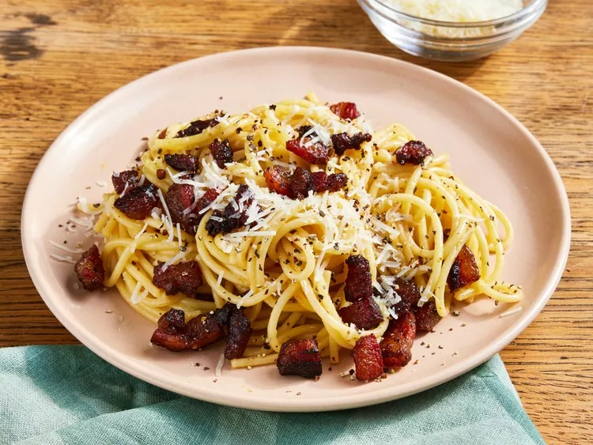

Description
Carbonara is made with guanciale (cured pork), eggs, Pecorino Romano cheese, spaghetti pasta, and lots of black pepper. Italians don't add extra ingredients like cream, milk, garlic, or onions. Try this recipe if you want to make an authentic, creamy carbonara that comes straight from Italy, where I live. Buon appetito!
Ingredients:
- Oil: This traditional Italian recipe starts with olive oil.
- Guanciale: Buy guanciale (or cured pork cheek) at your local butcher. If you can’t find it, you can substitute unsmoked bacon or pancetta.
- Spaghetti: Use store-bought or homemade spaghetti noodles. If you like, you can substitute bucatini for the spaghetti.
- Eggs: Three large eggs add richness and flavor.
- Cheese: Opt for hand-shredded Pecorino Romano cheese. You can substitute Parmesan, if preferred.
- Seasonings: This flavorful spaghetti alla carbonara is simply seasoned with salt and pepper.
Steps:
- Heat olive oil in a large skillet over medium heat; add guanciale (see Cook's Note). Cook, turning occasionally, until evenly browned and crispy, 5 to 10 minutes. Remove from heat and drain on paper towels.
- Bring a large pot of salted water to a boil. Cook spaghetti in the boiling water, stirring occasionally until tender yet firm to the bite, about 9 minutes. Drain and return to the pot. Let cool, stirring occasionally, about 5 minutes.
- Whisk eggs, 1/2 of the Pecorino Romano cheese, and some black pepper in a bowl until smooth and creamy.
- Pour egg mixture over pasta, stirring quickly, until creamy and slightly cooled. Stir in guanciale.
- Top with remaining Pecorino Romano cheese and more black pepper.